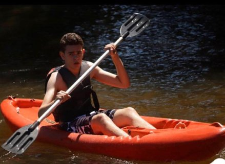

Matheus Graciano Peres
Meu nome é Matheus Graciano Peres, tenho 18 anos e, atualmente, estou cursando Sistemas para Internet na Fatec Rubens Lara Baixada Santista. Nascido em Santos, sou apaixonado por futebol e, consequentemente, pelo Santos Futebol Clube. No entanto, foi em outro esporte que me identifiquei como jogador, o Voleibol. Desde pequeno sempre gostei muito de assistir partidas de vôlei, até que aos 14 anos decidi que começaria a treinar e assim foi feito. Comecei a praticá-lo e fui construindo amizades ao longo do tempo. E, através de uma delas, fiquei sabendo que haveria uma seleção de jogadores para a formação de um novo projeto em parceria com o Santos F.C., cujo idealizador era o campeão olímpico Rodrigão. Então, não pensei duas vezes antes de participar e, felizmente, fui selecionado. Porém, por conta de alguns problemas, após 5 meses treinando com o time, tive que sair. Como não queria deixar de praticar o esporte que tanto admiro e já tinha alguns contatos no meio, fui aceito no time do Internacional de Regatas e por lá fiquei durante 1 ano, mas sabia que seria muito difícil me profissionalizar através de um time que não disputava campeonatos tão importantes e de grande visibilidade, portanto, comecei a me preparar para participar de novas seletivas em times consagrados no cenário nacional quando tive uma lesão ligamentar que me deixou afastado por um longo período e, logo após a lesão, a pandemia teve início e, durante 2 anos, fiquei sem treinar. Dessa forma, decidi que seria melhor focar totalmente nos estudos. Me formei em 2021 pelo Colégio Objetivo e, por conta do ensino EAD, decidi fazer um ano de cursinho para recuperar alguns conteúdos perdidos. A escolha do curso de S.I. não foi de difícil decisão considerando o crescimento da área de tecnologia e a influência, de maneira indireta, do meu pai, formado em Ciências da Computação e que, desde a adolescência, é apaixonado por ela da mesma forma que eu venho me tornando a cada dia tendo mais contato com o ramo.